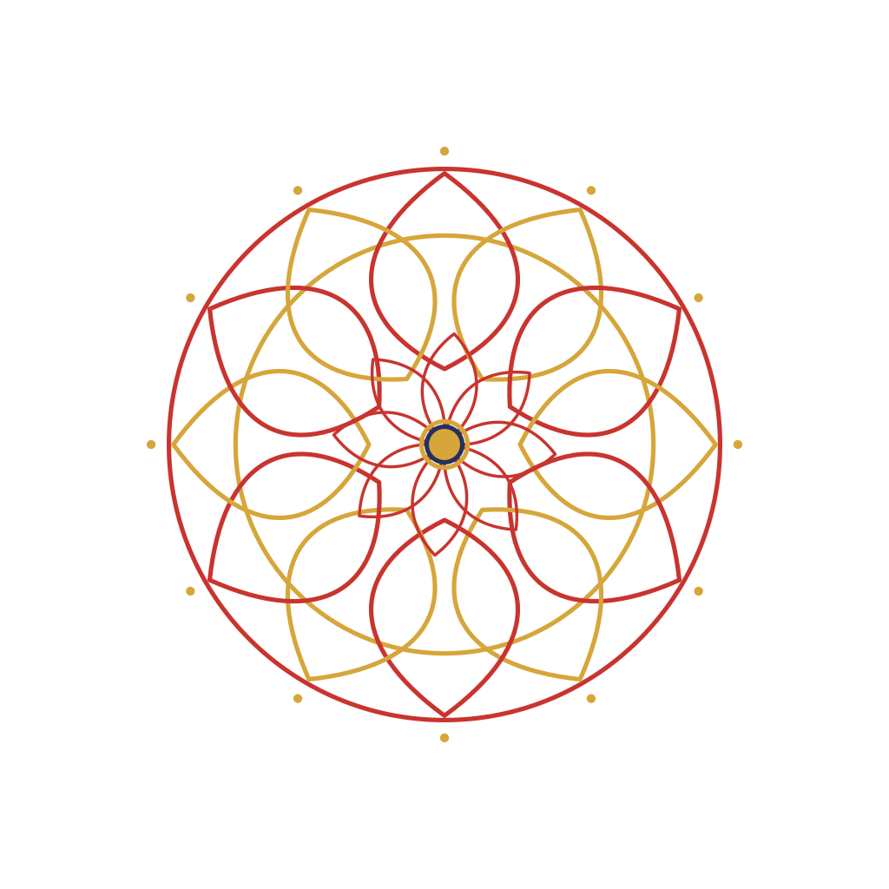

kolam / LOOP
kolam-single-line-loop-01
Tamil threshold drawing traditions; procedural geometric studies, not ritual diagrams.
Use & layering
Use as decorative geometry; do not claim these are documented sikku-kolam patterns.
draw-on · 3s at 30 fps · secondary beat
Layer: background. Pair with tamil-brush-fragment-01, tamil-brush-fragment-02, jasmine-garland.
Lottie: Renderer uses SVG reveal masks, compound ornaments or local deformations; this exporter intentionally supports only the exact concentric-circle motion subset.